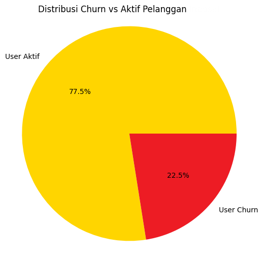

Mini project ini bertujuan untuk mengolah dataset pelanggan Telco guna menghasilkan insight yang bermanfaat bagi kebutuhan bisnis
Berikut 2 hal yang akan saya kerjakan:
Dataset berjumlah 200 baris dengan beberapa kolom seperti nama pelanggan, nomor hp, jenis kuota yang dibeli, dan lainnya.
Jika ingin melihat file dataset lebih lengkap bisa unduh di tautan berikut:
üì• Unduh Dataset (CSV)Kesimpulan mini Project 1:
Perhitungan churn rate dilakukan dengan mem-filter pelanggan yang tidak melakukan topup kuota selama 3 bulan atau lebih. Kemudian ditemukan hasil sebanyak 22.50% pelanggan (45 orang) dari total 200 pelanggan sudah berhenti berlangganan. Hasil perhitungan disajikan dalam bentuk diagram berikut:
Jika ingin melihat proses pengolahan data lebih lengkap, silahkan unduh di tautan berikut:
üì• Unduh File Churn Rate (PDF)Kesimpulan mini Project 2:
Dari proses clustering yang dilakukan, hasilnya pelanggan dibedakan ke dalam 3 kelompok (Cluster 0, Cluster 1, Cluster 2).
Kuota_Bulan_GB = 6GBKota = YogyakartaPaket = Unlimited 2GBPada rentang cluster ini jumlah pengguna terbanyak di dominasi oleh wilayah Yogyakarta, dengan pengguna sebanyak 68 dari total 200 orang. Untuk paket yang paling populer di cluster ini adalah Unlimited 2GB dengan penggunaan rata-rata menyentuh angka 6GB per bulan.
Kuota_Bulan_GB = 12GBKota = SurabayaPaket = Freedom InternetCluster ini memiliki total pengguna terbanyak yaitu 72 orang, dengan kebanyakan pengguna berasal dari Kota Surabaya. Paket Freedom Internet merupakan jenis paket yang paling banyak dibeli oleh customer dalam cluster ini dengan rata-rata penggunaan tiap bulan mencapai 12GB per bulan.
Kuota_Bulan_GB = 19GBKota = Bandung, SemarangPaket = Freedom InternetLagi-lagi paket Freedom Internet adalah pilihan populer bagi orang-orang yang berada pada cluster ini, dengan pengguna sebanyak 60 orang yang berasal dari wilayah Bandung dan Semarang. Rata-rata pengguna menghabiskan kuota sebanyak 19GB tiap bulan.
Jika ingin melihat proses pengolahan data lebih lengkap, silahkan unduh di tautan berikut:
üì• Unduh File Clustering (PDF)Melalui mini project ini, saya mencoba menerapkan beberapa teknik dasar terkait Web Programming, Python Programming, Machine Learning serta Data Analysis yang telah saya pelajari diluar materi akademik. Semoga dengan mini project ini bisa menjadi bahan pertimbangan keputusan dalam permohonan magang saya. Meskipun sedikit, namun saya berharap agar bisa ikut membantu serta berkontribusi terhadap pekerjaan serta tanggung jawab di perusahaan.
Terima kasih.